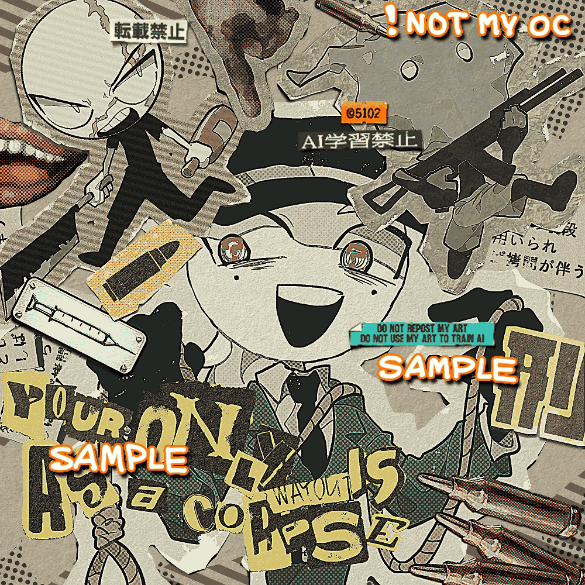

2022年8月21日に納品。紙の質感の追求にかなり時間を費やしました。特に英字。紙の端と文字のカスレが自然になるように、限られたブラシの設定をどうにか弄りまくるなど。
背景の口や手、銃弾などは写真に見えるようになんとな～くな感覚で描いてみたものだが、おそらく「厚塗り」という縁のない技法に無意識に手を出していたと思われる。
難しかったけど写真ぽく見えない事もないので結構いい感じじゃないかな。厚塗り絵師ってすごいなーと思った。
ご依頼ありがとうございました。
2022/08/21
 Commission
Commission